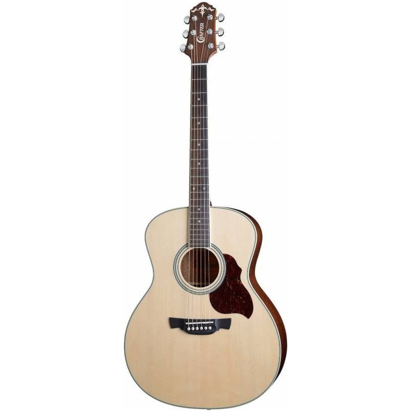

Акустическая гитара TERRIS TF-3805A BK с корпусом типа фолк-гитары – это яркий звук и компактный размер. Технические характеристики: Форма корпуса: фолк 38" Верхняя дека: липа Нижняя дека и обечайка: липа Гриф c анкерным стержнем Накладка грифа: крашеный клен Бридж: крашеный клен Струны: металлические Цвет: черный Отделка: глянец Музыкальные инструменты марки Terris созданы для начинающих музыкантов. Доступная цена и отменное качество позволяют легко приступить к освоению инструмента. После получения достаточного опыта, вы сможете выбрать инструмент, более полно отвечающий вашим потребностям. Кроме того, музыкальные инструменты Террис полюбились профессионалам, как удобный вариант для похода или вечеринки, чтобы не подвергать опасности свой основной инструмент. Более прочный корпус делают инструменты Террис устойчивыми к повреждению. И даже, если будут какие-то повреждения, то основной инструмент, используемый для концертов, останется в целости и сохранности. За счет этих достоинств, инструменты Террис получают хорошие отзывы как от начинающих музыкантов, так и от профессионалов.
